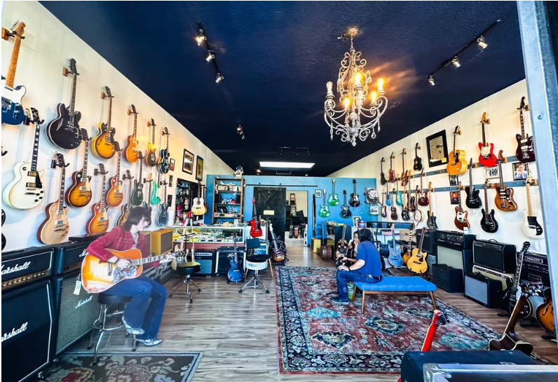

Inventory
Full floor list with year, origin, vibe, and pricing hooks—synced mindset with the Reverb feed.
Open inventory →Tap to power on · Enter the vault

Anti–big-box · Curated American iron
Not a warehouse—a vault. Real walls, real rugs, real amps: tour-grade gear and the stories in every neck and nut.
Identity
Iron and wood. Soul over SKU.
At Skylight Guitars, we aren’t interested in mass-produced inventory from corporate big-box stores. We deal in iron and wood—quality American-made, used, and vintage gear chosen for tone and integrity.
Based in the heart of Bakersfield, we curate the gear that helped build the Sound—estates, rare consignments, and tour-grade pieces with a story.
Skylight Guitars · Authenticity uncompromised
Explore
Every section of the site is built like a room in the shop—deep pages for inventory, estates, repair, legends, and reviews. Your header and footer stay with you everywhere.
Local
Consistent name, address, and phone everywhere—this site, Google Business Profile, Yelp, and socials—so local search (SEO, GEO) trusts your signal.